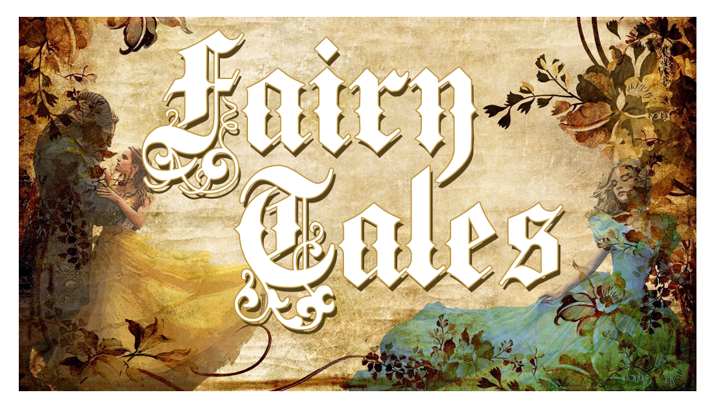

This Website is about fairy tales.  Here are some fairy tales listed below.
 On one fine summer's day in a field a Grasshopper was hopping about in a musical mood. An ant passed by bearing along with great toil an ear of corn he was taking to the nest.grasshopper in musical mood
The grasshopper invited the ant to sit for a chat with him. But the ant refused saying that "I’m storing up food for winter". " Why don’t you do the same?" asked the ant to the grasshopper.
ant"Pooh! Why bother about winter?" said the Grasshopper; we have got enough food at present." But the Ant went on its way and continued its toil.
Finally, when winter came, the Grasshopper found itself dying of hunger, while it saw the ants distributing corn and grain from their storage.
Then the Grasshopper understood that…
It is best to prepare for the days of necessity.
On one fine summer's day in a field a Grasshopper was hopping about in a musical mood. An ant passed by bearing along with great toil an ear of corn he was taking to the nest.grasshopper in musical mood
The grasshopper invited the ant to sit for a chat with him. But the ant refused saying that "I’m storing up food for winter". " Why don’t you do the same?" asked the ant to the grasshopper.
ant"Pooh! Why bother about winter?" said the Grasshopper; we have got enough food at present." But the Ant went on its way and continued its toil.
Finally, when winter came, the Grasshopper found itself dying of hunger, while it saw the ants distributing corn and grain from their storage.
Then the Grasshopper understood that…
It is best to prepare for the days of necessity.
Long long ago there lived a fox who loved to eat. He lived close to a vineyard and he used to stare at the lovely grapes that hung there.
"How juice they look. Oh I am sure these are stuff that melts in the mouth when you have them. If only I could reach them".
Fox and GrapesOne sunny day, the fox woke up and saw the grapes glistening by the sunlight. The vineyard looked heavenly and the grapes looked so luscious that the famished fox could no longer control itself. He jumped to reach them but fell down.
He jumped again. No, they were much higher.
He jumped even more. But they were still out of reach.
He jumped and stretched and hopped but to no avail. Those yummy grapes hung higher than the fox could reach. No matter how hard he tried, the fox could not reach the grapes. He panted and began to sweat out of exhaustion.
Giving up finally, he looked up in contempt and said as he walked away, "Those grapes surely must be sour. I wouldn't eat them even if they were served to me on a golden dish."
It's easy to despise what you cannot have.
The hare was once boasting of his speed before the other animals. "I have never yet been beaten," said he, "when I put forth my full speed. I challenge anyone here to race with me."
The tortoise said quietly, "I accept your challenge."
"That is a good joke," said the hare. "I could dance around you all the way."
Tortoise and hare"Keep your boasting until you've beaten," answered the tortoise. "Shall we race?"
So a course was fixed and a start was made. The hare darted almost out of sight at once, but soon stopped and, to show his contempt for the tortoise, lay down to have a nap. The tortoise plodded on and plodded on, and when the hare awoke from his nap, he saw the tortoise nearing the finish line, and he could not catch up in time to save the race.
Plodding wins the race.